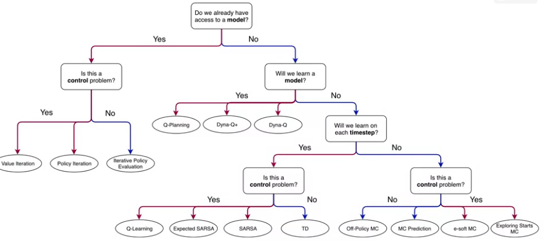

Coursera website: course 3 - Prediction and Control with Function Approximation of Reinforcement Learning Specialization
my notes on course 1 - Fundamentals of Reinforcement Learning, course 2 - Sample-based Learning Methods, course 4 - A Complete Reinforcement Learning System (Capstone)
specialization roadmap - course 3 - Prediction and Control with Function Approximation (syllabus)
course 3 - In Course 3, we leave the relative comfort of small finite MDPs and investigate RL with function approximation. Here we will see that the main concepts from Courses 1 and 2 transferred to problems with larger infinite state spaces. We will cover feature construction, neural network learning, policy gradient methods, and other particularities of the function approximation setting.
Week 1 - On-policy Prediction with Approximation
Week 2 - Constructing Features for Prediction
Week 3 - Control with Approximation
Week 4 - Policy Gradient
Course introduction
Video by Adam and Martha
In course 2:

In course 3:

Course 3 - Week 1 - On-policy Prediction with Approximation
Module 1 Learning Objectives
Lesson 1: Estimating Value Functions as Supervised Learning
- Understand how we can use parameterized functions to approximate value functions
- Explain the meaning of linear value function approximation
- Recognize that the tabular case is a special case of linear value function approximation.
- Understand that there are many ways to parameterize an approximate value function
- Understand what is meant by generalization and discrimination
- Understand how generalization can be beneficial
- Explain why we want both generalization and discrimination from our function approximation
- Understand how value estimation can be framed as a supervised learning problem
- Recognize not all function approximation methods are well suited for reinforcement learning
Lesson 2: The Objective for On-policy Prediction
- Understand the mean-squared value error objective for policy evaluation
- Explain the role of the state distribution in the objective
- Understand the idea behind gradient descent and stochastic gradient descent
- Outline the gradient Monte Carlo algorithm for value estimation
- Understand how state aggregation can be used to approximate the value function
- Apply Gradient Monte-Carlo with state aggregation
Lesson 3: The Objective for TD
- Understand the TD-update for function approximation
- Highlight the advantages of TD compared to Monte-Carlo
- Outline the Semi-gradient TD(0) algorithm for value estimation
- Understand that TD converges to a biased value estimate
- Understand that TD converges much faster than Gradient Monte Carlo
Lesson 4: Linear TD
- Derive the TD-update with linear function approximation
- Understand that tabular TD(0) is a special case of linear semi-gradient TD(0)
- Highlight the advantages of linear value function approximation over nonlinear
- Understand the fixed point of linear TD learning
- Describe a theoretical guarantee on the mean squared value error at the TD fixed point
Lesson 1: Estimating Value Functions as Supervised Learning
Reading Chapter 9.1-9.4 (pp. 197-209) in the Reinforcement Learning textbook
In many of the tasks to which we would like to apply reinforcement learning the state space is combinatorial and enormous; the number of possible camera images, for example, is much larger than the number of atoms in the universe.
In many of our target tasks, almost every state encountered will never have been seen before. To make sensible decisions in such states it is necessary to generalize from previous encounters with different states that are in some sense similar to the current one. In other words, the key issue is that of generalization. How can experience with a limited subset of the state space be usefully generalized to produce a good approximation over a much larger subset?
Fortunately, generalization from examples has already been extensively studied, and we do not need to invent totally new methods for use in reinforcement learning. To some extent we need only combine reinforcement learning methods with existing generalization methods. The kind of generalization we require is often called function approximation because it takes examples from a desired function (e.g., a value function) and attempts to generalize from them to construct an approximation of the entire function. Function approximation is an instance of supervised learning, the primary topic studied in machine learning, artificial neural networks, pattern recognition, and statistical curve fitting.
Video Moving to Parameterized Functions by Adam
By the end of this video, you’ll be able to understand how we can use parameterized functions to approximate values, explain linear value function approximation, recognize that the tabular case is a special case of linear value function approximation, and understand that there are many ways to parameterize an approximate value function.
Video Generalization and Discrimination by Martha
By the end of this video, you will be able to understand what is meant by generalization and discrimination, understand how generalization can be beneficial, and explain why we want both generalization and discrimination from our function approximation.
Video Framing Value Estimation as Supervised Learning by Martha
By the end of this video, you will be able to understand how value estimation can be framed as a supervised learning problem, and recognize that not all function approximation methods are well suited for reinforcement learning.
Lesson 2: The Objective for On-policy Prediction
Video The Value Error Objective by Adam
By the end of this video you will be able to understand the Mean Squared Value Error objective for policy evaluation and explain the role of the state distribution in the objective.
\[ \overline{VE}=\displaystyle\sum_{s}\mu(s)[v_\pi(s)-\hat{v}(s,w)]^2 \] This is the Mean Squared Value Error Objective where \(\mu\) reflects how much we care about each state (a probability distribution)
Video Introducing Gradient Descent by Martha
By the end of this video, you will be able to understand the idea of gradient descent, and understand that gradient descent converges to stationary points.
Video Gradient Monte for Policy Evaluation by Martha
By the end of this video, you will be able to understand how to use gradient descent and stochastic gradient descent to minimize value error and outline the Gradient Monte Carlo algorithm for value estimation.

Video State Aggregation with Monte Carlo by Adam
By the end of this video, you will be able to understand how state aggregation can be used to approximate the value function and apply gradient Monte Carlo with state aggregation.
Lesson 3: The Objective for TD
Video Semi-Gradient TD for Policy Evaluation by Adam
By the end of this video you will be able to understand the TD update for function approximation, and outline the semi-gradient TD(0) algorithm for value estimation.
Video Comparing TD and Monte Carlo with State Aggregation by Adam
By the end of this video, you’ll be able to understand that TD converges to a bias value estimate and understand that TD can learn faster than Gradient Monte Carlo.
Video Doina Precup: Building Knowledge for AI Agents with Reinforcement Learning
Lesson 4: Linear TD
Video The Linear TD Update by Martha
By the end of this video, you’ll be able to derive the TD update with linear function approximation, understand that tabular TD(0) as a special case of linear semi gradient TD(0), and understand why we care about linear TD as a special case.
Video The True Objective for TD by Martha
By the end of this video, you will be able to understand the fixed point of linear TD and describe a theoretical guarantee on the mean squared value error at the TD fixed point.
Video Week 1 Summary by Adam
Assignment
TD with State Aggregation
notebooks in github
Course 3 - Week 2 - Constructing Features for Prediction
Module 2 Learning Objectives
Lesson 1: Feature Construction for Linear Methods
- Describe the difference between coarse coding and tabular representations
- Explain the trade-off when designing representations between discrimination and generalization
- Understand how different coarse coding schemes affect the functions that can be represented
- Explain how tile coding is a (computationally?) convenient case of coarse coding
- Describe how designing the tilings affects the resultant representation
- Understand that tile coding is a computationally efficient implementation of coarse coding
Lesson 2: Neural Networks
- Define a neural network
- Define activation functions
- Define a feedforward architecture
- Understand how neural networks are doing feature construction
- Understand how neural networks are a non-linear function of state
- Understand how deep networks are a composition of layers
- Understand the tradeoff between learning capacity and challenges presented by deeper networks
Lesson 3: Training Neural Networks
- Compute the gradient of a single hidden layer neural network
- Understand how to compute the gradient for arbitrarily deep networks
- Understand the importance of initialization for neural networks
- Describe strategies for initializing neural networks
- Describe optimization techniques for training neural networks
Lesson 1: Feature Construction for Linear Methods
Reading Chapter 9.4-9.5.0 (pp. 204-210), 9.5.3-9.5.4 (pp. 215-222) and 9.7 (pp. 223-228) in the Reinforcement Learning textbook
Video Coarse Coding by Adam
By the end of this video, you’ll be able to describe coarse coding and describe how it relates to state aggregation.

Video Generalization Properties of Coarse Coding by Martha
By the end of this video, you’ll be able to describe how coarse coding parameters affect generalization and discrimination, and understand how that affects learning speed and accuracy.
Video Tile Coding by Adam
By the end of this video, you’ll be able to explain how tile coding achieves both generalization and discrimination, and understand the benefits and limitations of tile coding.
Video Using Tile Coding in TD by Adam
By the end of this video, you’ll be able to explain how to use tile coding with TD learning and identify important properties of tile code representations.
Lesson 2: Neural Networks
Video What is a Neural Network? by Martha
By the end of this video, you’ll be able to define a neural network, define an activation function and understand how a neural network is a parameterized function.
Video Non-linear Approximation with Neural Networks by Martha
By the end of this video, you will understand how neural networks do feature construction, and understand how neural networks are a non-linear function of state.
Video Deep Neural Networks by Adam
By the end of this video, you will understand how deep neural networks are composed of many layers and understand that depth can facilitate learning features through composition and abstraction.
Lesson 3: Training Neural Networks
Video Gradient Descent for Training Neural Networks by Martha
By the end of this video, you’ll be able to derive the gradient of a neural network and implement gradient descent on a neural network.
Video Optimization Strategies for NNs by Martha
By the end of this video, you will be able to understand the importance of initialization for neural networks and describe optimization techniques for training neural networks.
Video David Silver on Deep Learning + RL = AI?
Video Week 2 Review by Adam
Assignment
Semi-gradient TD with a Neural Network
notebooks in github
Course 3 - Week 3 - Control with Approximation
Module 3 Learning Objectives
Lesson 1: Episodic Sarsa with Function Approximation
- Explain the update for Episodic Sarsa with function approximation
- Introduce the feature choices, including passing actions to features or stacking state features
- Visualize value function and learning curves
- Discuss how this extends to Q-learning easily, since it is a subset of Expected Sarsa
Lesson 2: Exploration under Function Approximation
- Understanding optimistically initializing your value function as a form of exploration
Lesson 3: Average Reward
- Describe the average reward setting
- Explain when average reward optimal policies are different from discounted solutions
- Understand how differential value functions are different from discounted value functions
Lesson 1: Episodic Sarsa with Function Approximation
Reading Chapter 10 (pp. 243-246) and 10.3 (pp. 249-252) in the Reinforcement Learning textbook
Video Episodic Sarsa with Function Approximation by Adam
By the end of this video, you’ll be able to understand how to construct action-dependent features for approximate action values and explain how to use Sarsa in episodic tasks with function approximation.
Video Episodic Sarsa in Mountain Car by Adam
By the end of this video, you will gain experience analyzing the performance of an approximate TD control method.
Video Expected Sarsa with Function Approximation by Adam
By the end of this video, you’ll be able to explain the update for expected Sarsa with function approximation, and explain the update for Q-learning with function approximation.

Lesson 2: Exploration under Function Approximation
Video Exploration under Function Approximation by Martha
By the end of this video, you’ll be able to describe how optimistic initial values and \(\epsilon\)-greedy can be used with function approximation.
Lesson 3: Average Reward
Video Average Reward: A New Way of Formulating Control Problems by Martha
By the end of this video, you’ll be able to describe the average reward setting, explain when average reward optimal policies are different from policies obtained under discounting and understand differential value functions.
Satinder Singh on Intrinsic Rewards
Video Week 3 Review by Martha
Assignment
Function Approximation and Control
notebooks in github
Course 3 - Week 4 - Policy Gradient
Module 4 Learning Objectives
Lesson 1: Learning Parameterized Policies
- Understand how to define policies as parameterized functions
- Define one class of parameterized policies based on the softmax function
- Understand the advantages of using parameterized policies over action-value based methods
Lesson 2: Policy Gradient for Continuing Tasks
- Describe the objective for policy gradient algorithms
- Describe the results of the policy gradient theorem
- Understand the importance of the policy gradient theorem
Lesson 3: Actor-Critic for Continuing Tasks
- Derive a sample-based estimate for the gradient of the average reward objective
- Describe the actor-critic algorithm for control with function approximation, for continuing tasks
Lesson 4: Policy Parameterizations
- Derive the actor-critic update for a softmax policy with linear action preferences
- Implement this algorithm
- Design concrete function approximators for an average reward actor-critic algorithm
- Analyze the performance of an average reward agent
- Derive the actor-critic update for a gaussian policy
- Apply average reward actor-critic with a gaussian policy to a particular task with continuous actions
Lesson 1: Learning Parameterized Policies
Reading Chapter 13 (pp. 321-336) in the Reinforcement Learning textbook
Video Learning Policies Directly by Adam
By the end of this video, you’ll be able to understand how to define policies as parameterized functions and define one class of parametrized policies based on the softmax function.
Video Advantages of Policy Parameterization by Adam
By the end of this video, you’ll be able to understand some of the advantages of using parameterized policies.
Lesson 2: Policy Gradient for Continuing Tasks
Video The Objective for Learning Policies by Martha
By the end of this video, you’ll be able to describe the objective for policy gradient algorithms.

Video The Policy Gradient Theorem by Martha
By the end of this video, you will be able to describe the result of the policy gradient theorem and understand the importance of the policy gradient theorem.

Lesson 3: Actor-Critic for Continuing Tasks
Video Estimating the Policy Gradient by Martha
By the end of this video, you will be able to derive a sample-based estimate for the gradient of the average reward objective.

Video Actor-Critic Algorithm by Adam
By the end of this video, you’ll be able to describe the actor-critic algorithm for control with function approximation for continuing tasks.

Lesson 4: Policy Parameterizations
Video Actor-Critic with Softmax Policies by Adam
By the end of this video you’ll be able to derive the actor critic update for a Softmax policy with linear action preferences and implement this algorithm.
Video Demonstration with Actor-Critic by Adam
By the end of this video, you’ll be able to design a function approximator for an average reward actor-critic algorithm and analyze the performance of an average reward agent.
Video Gaussian Policies for Continuous Actions by Martha
By the end of this video, you’ll be able to derive the actor-critic update for a Gaussian policy and apply average reward actor-critic with a Gaussian policy to task with continuous actions.
Video Week 4 Summary by Martha

Assignment
Average Reward Softmax Actor-Critic using Tile-coding
notebooks in github